A bedroom decorated entirely from a single Pinterest board usually ends up looking like everyone else's.
The ones that actually feel personal borrow ideas, then run them through someone's own taste.
That's the real difference between a room that's merely decorated and one that feels genuinely lived-in.
These 12 ideas are starting points, not a template to copy exactly.
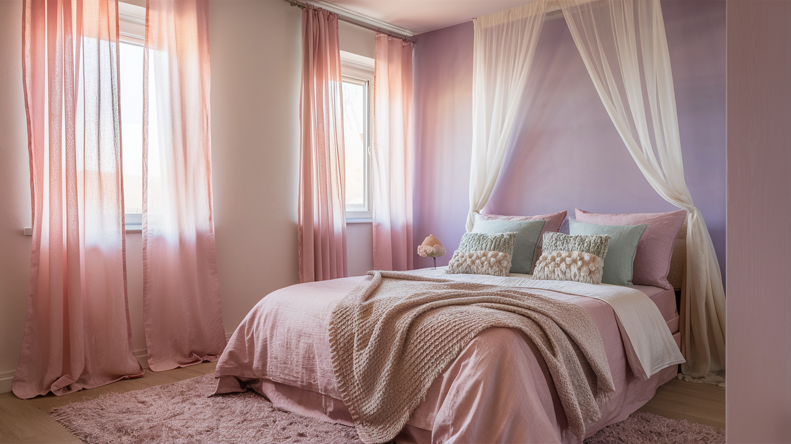
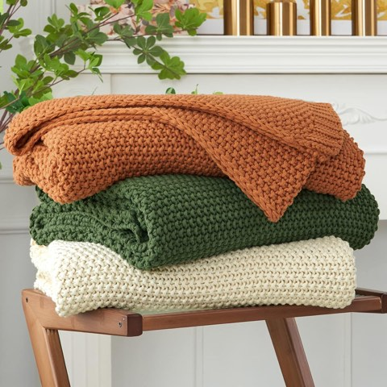
Longhui Bedding Chunky Cable Knit Throw Blanket, Cream, 100% Organic Cotton, 60x80
Shop on Amazon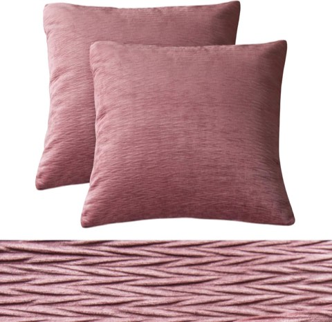
PHF Velvet Textured Wrinkled Square Throw Pillow Covers, Set of 2, 18" x 18"
Shop on Amazon1. Don't Skip Scent and Sound
A bedroom is more than what it looks like.
A candle or diffuser with a consistent scent creates a sense memory tied specifically to that room.
A small speaker for music, or even just a white noise machine, changes how the space feels to spend time in.
These two senses get overlooked constantly, even though they do as much for comfort as anything visual on this list.
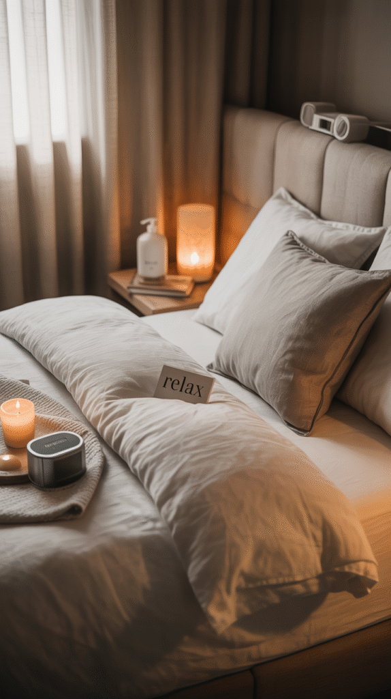
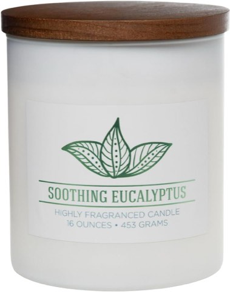
Carolina Soothing Eucalyptus Scented Candle, 16 oz Wellness Relaxing Aromatherapy Candle
Shop on Amazon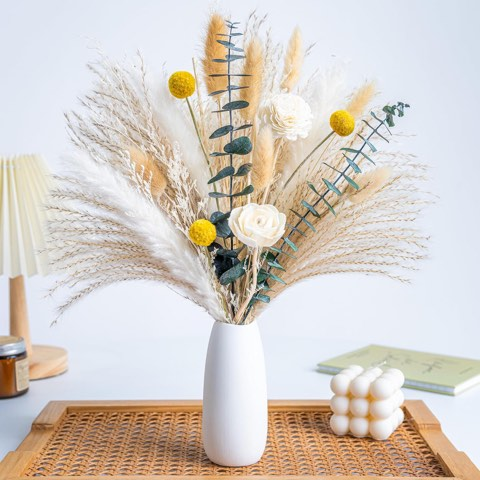
Dried Flowers kit Reed Diffuser for Home Decor, White Ceramic Vase Included, Boho Decor
Shop on Amazon2. Build a Mood Board That Actually Gets Used
A small board with fabric swatches, photos, postcards, or sketches pinned up isn't just decoration. It's a visible record of what inspires whoever lives there.
It also doubles as an easy way to plan future changes without committing to anything yet.
A cork board, a pinboard, or even a cleared section of wall all work for this.
Updating it occasionally keeps the room feeling current without a full redecorate.
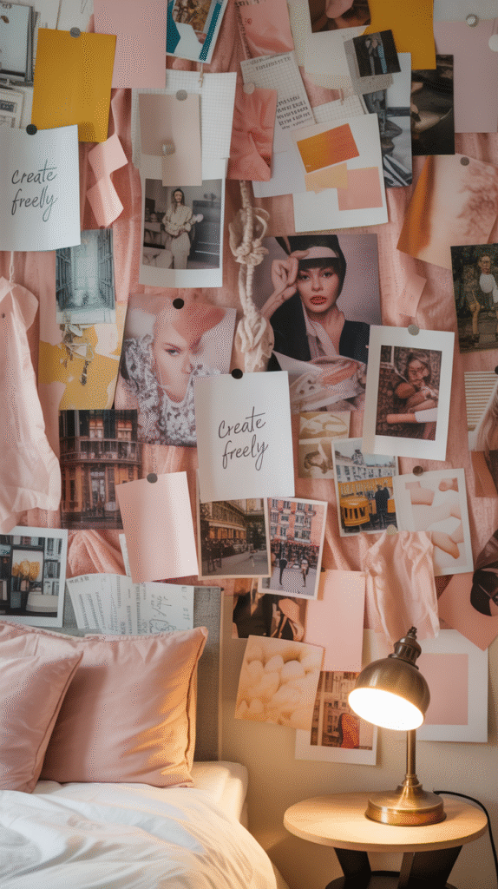

Corksidol Cork Tiles, 12"x12", 1/2" Thick, Self Adhesive Backing for Floor/Wall, 10 Pack
Shop on AmazonPangda Multi-Purpose Cork Roll, 16in x 5.4ft, 1/2" Thick Cork Sheet
Shop on Amazon3. Style the Nightstand Like It Matters
A nightstand piled with chargers and old water glasses undercuts an otherwise well-decorated room.
A small lamp, a stack of two or three books, and one personal object cover the essentials without clutter.
This is one of the smallest surfaces in the room, but it's also one of the most looked-at.
A styled nightstand makes the whole room feel more finished than almost any other single change.
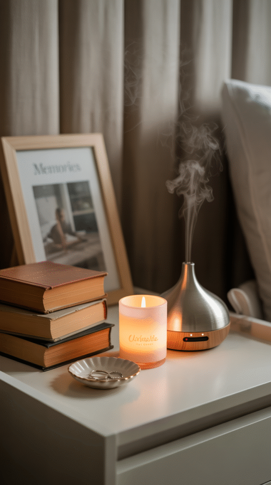
4. Make a DIY Wall Display
A wall of mismatched frames, postcards, ticket stubs, or small art pieces tells a more personal story than a single purchased print ever could.
This doesn't need to be perfectly symmetrical. A slightly imperfect arrangement often reads as more genuine.
It's also one of the few decor choices that grows and changes along with whoever lives there.
Starting small and adding to it over time keeps the whole project low-pressure.
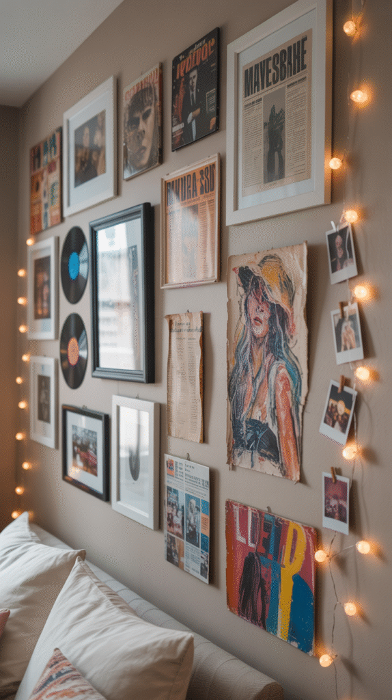
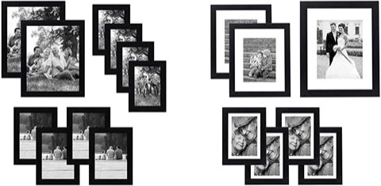
Americanflat Black Picture Frames Gallery Wall Decor Set with Shatter Resistant Glass
Shop on Amazon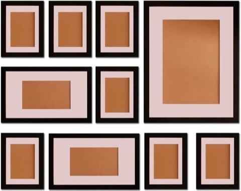
FUNTRESS 10 Pieces Gallery Wall Photo Frames Set For Wall 16'' 12" 7" Size Wooden, Black
Shop on Amazon5. Build a Small Curated Corner
A single corner, styled with a chair, a small table, and a lamp, gives the room a reason to be used beyond just sleeping.
A reading spot, a vanity corner, or a small plant display all work as a dedicated little zone.
This doesn't need much space. Even a narrow corner can hold a chair and a side table.
It turns an unused patch of floor into one of the most-used spots in the room.
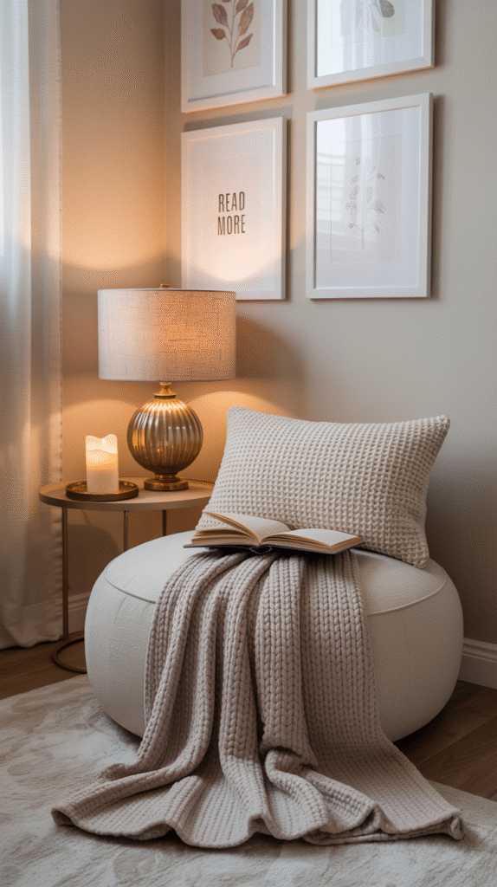
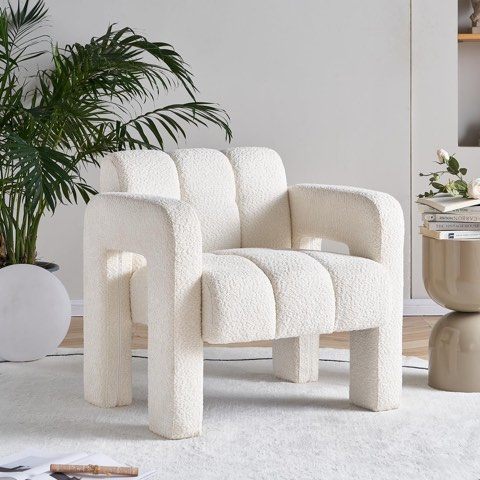
Vensico Boucle Accent Chair, Modern Comfy Reading Nook Chair for Bedroom
Shop on Amazon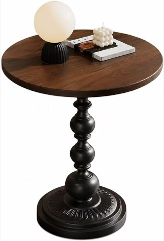
Vintage Round Side Table, Small Accent Table for Living Room Bedroom Balcony, French Style Pedestal End Table with Wood Look Tabletop, Easy Assembly, Brown and Black (13.7-inch)
Shop on Amazon6. Bring In a Few Real Plants
A plant adds color and life in a way almost nothing else in a bedroom can replicate.
Low-maintenance varieties work well for a room that doesn't get constant attention.
A plant on the nightstand, one in a corner, and maybe a trailing variety on a shelf cover most of the room's dead space.
It's a small addition that makes the whole room feel more alive, literally and visually.
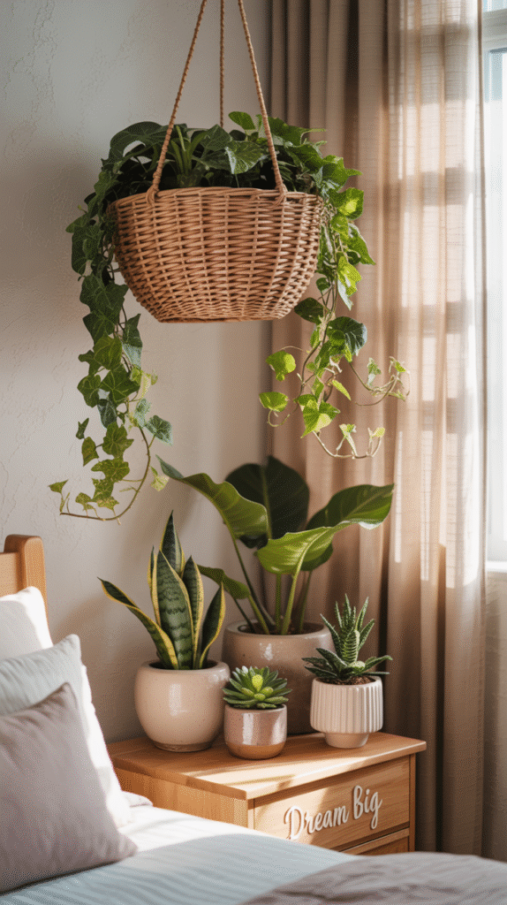
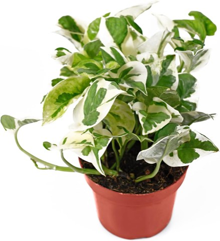
California Tropicals Pothos 'N Joy, 4" Live Plant, Variegated White and Green Leaves
Shop on AmazonLive Pothos Plants Indoor Plants Live Houseplants, Pothos Live Plant House Plants
Shop on Amazon7. Pick Bedding With Actual Personality
Plain white bedding is a safe default, but it rarely says anything about who sleeps there.
A bold pattern, a saturated color, or a mix of textures on the pillows and throw turns the bed into the room's natural focal point.
Since the bed takes up the most visual space in most bedrooms, this one choice carries real weight.
It's also one of the easiest things to change seasonally without touching anything else in the room.
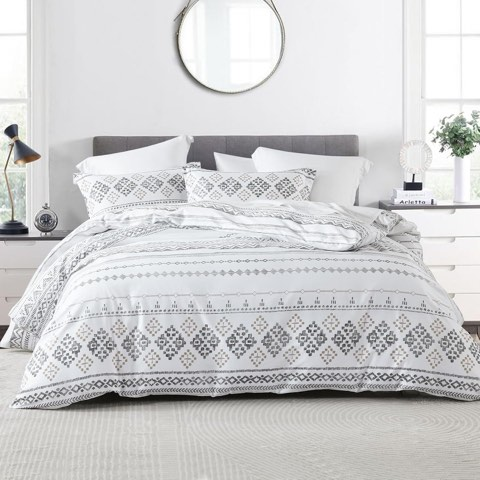
CozyDH Boho Aztec Tribal Duvet Cover Set Queen, Gray White, 100% Cotton
Shop on Amazon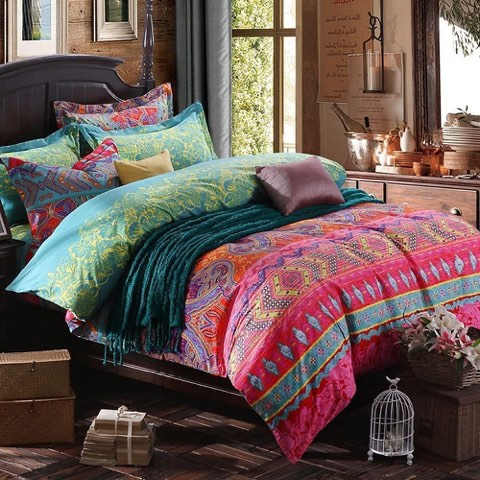
Boho Queen Duvet Cover Soft Cotton 3 Pieces Bedding Sets Queen Boho Exotic Colorful Chic
Shop on Amazon8. Go Bigger Than Expected on the Mirror
A small mirror tucked in a corner barely registers.
An oversized one, leaned against a wall or hung as a focal point, adds real presence and reflects more light back into the room.
It also makes a smaller bedroom feel noticeably more open.
An interesting frame shape, arched, round, irregular, adds personality beyond just the reflection itself.
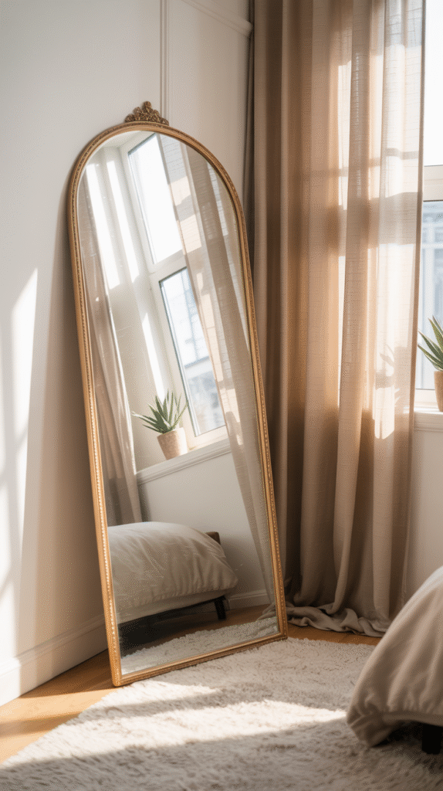
9. Choose Lighting That Feels Warm, Not Clinical
Overhead lighting alone rarely makes a bedroom feel inviting.
A string of warm fairy lights, a soft-glow table lamp, or a dimmer switch all shift the mood toward something calmer.
Warm-toned bulbs specifically make a real difference. Cool white light reads as office lighting in a bedroom.
This is one of the fastest, cheapest changes on this entire list.
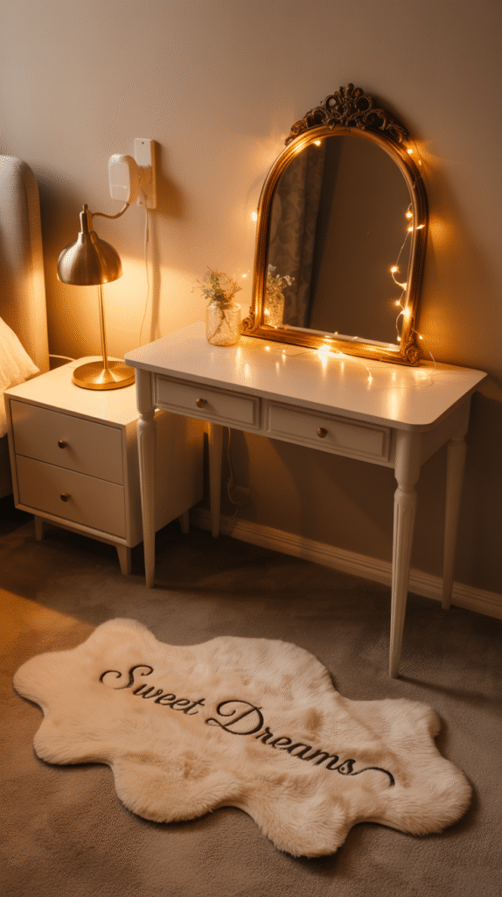
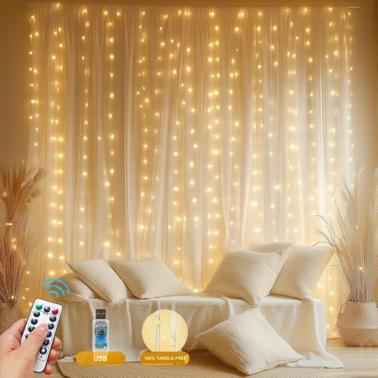
HOLITS Fairy Curtain Lights, Tangle-Free Warm White, USB Plug-in, 8 Modes with Remote
Shop on Amazon
10. Use Floating Shelves to Show Off What Matters
A floating shelf does more than add storage. It's a small curated display, visible every day.
Books, small art, a plant, a found object from a trip all work well together in a tight grouping.
Unlike a closed cabinet, what's on a floating shelf is a daily, visible choice about what matters.
Keeping it to a handful of objects, not a crowded row, keeps it reading as intentional.
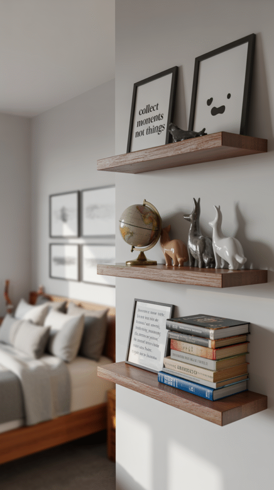
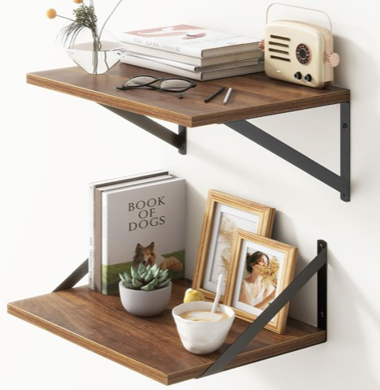
Walnut Floating Shelves Set of 2, 16"W x 12"D Wide Display Ledges for Bedroom, Bathroom
Shop on Amazon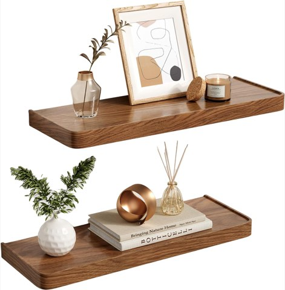
Solid Walnut Floating Shelves for Wall 16.5" Set of 2, Wall Mounted Shelf
Shop on Amazon11. Commit to One Statement Wall
A bold wallpaper, a saturated paint color, or a textured panel on just one wall makes a stronger impression than a room painted the same neutral all around.
Keeping the other three walls simple lets that one wall actually read as a statement instead of getting lost.
This is a lower-commitment way to try a bold choice than painting the whole room.
It also gives the rest of the furniture and decor somewhere to stay quiet and let the wall lead.
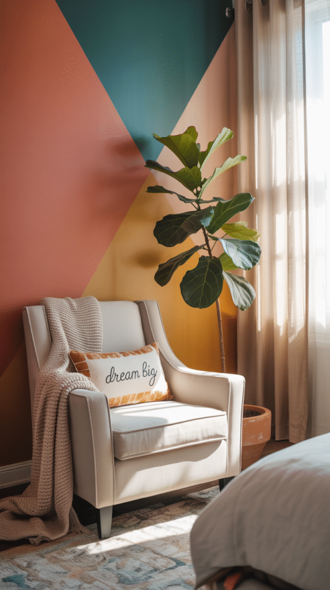
VEELIKE Moody Green Fern Wallpaper Peel and Stick Botanical Wallpaper
Shop on AmazonVaryStyle Green/Gold Leaf Wallpaper Peel and Stick for Bedroom 17.7"x118"
Shop on Amazon12. Layer Textures Without Overthinking It
A room with only one texture, all smooth cotton, all one fabric type, tends to feel flat no matter the color scheme.
A chunky knit throw, a velvet pillow, a woven basket in the corner all add dimension without adding more color.
Mixing textures is one of the easiest upgrades that doesn't require redoing anything that's already there.
It's also one of the cheapest, since most of it can come from what's already around the house.
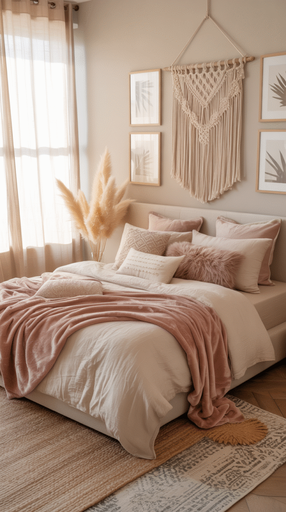
Pick Two or Three, Not All Twelve
None of these 12 ideas need to be done all at once, or exactly as described here.
Pick two or three that actually sound appealing and start there.
A bedroom that feels genuinely personal usually comes from a handful of real choices, not a complete matching set.
The room should end up reflecting whoever actually sleeps there, not whatever trend happens to be circulating that year.